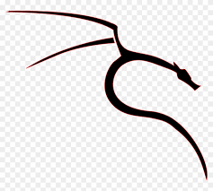

¿Qué he aprendido en este módulo?
En el módulo de Seguridad he aprendido a identificar vulnerabilidades, proteger sistemas operativos y redes, y aplicar medidas de prevención y recuperación ante incidentes. También he utilizado herramientas de auditoría y detección de malware.
Competencias Desarrolladas
- Configuración de cortafuegos (firewall) y políticas de seguridad.
- Instalación y uso de antivirus y antimalware.
- Realización de copias de seguridad (backups) y restauración de datos.
- Auditorías básicas de seguridad con herramientas como Nessus o Wireshark.
- Prevención ante phishing, ransomware y otras amenazas comunes.
- Gestión de contraseñas y cifrado de archivos.
Herramientas Utilizadas

Windows Defender

Kali Linux
Wireshark
Herramientas de backup
Ejemplos de mis Trabajos
Configuración de reglas de firewall en Windows y Linux.
Captura y análisis de tráfico de red con Wireshark.
Prácticas de copias de seguridad y recuperación de datos.